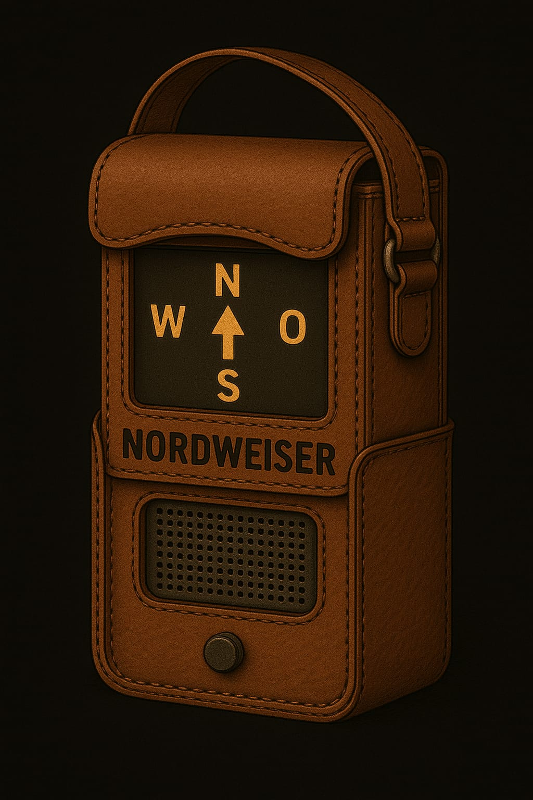
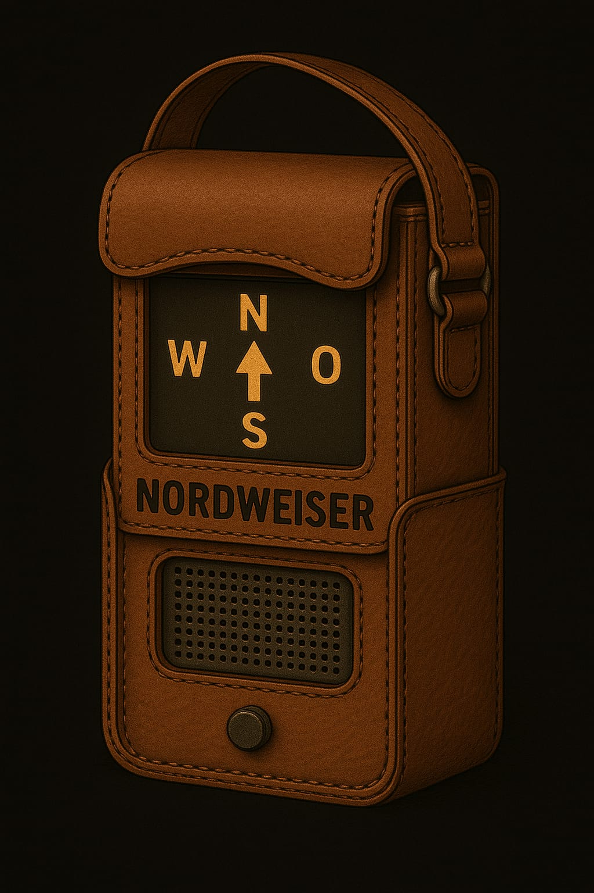
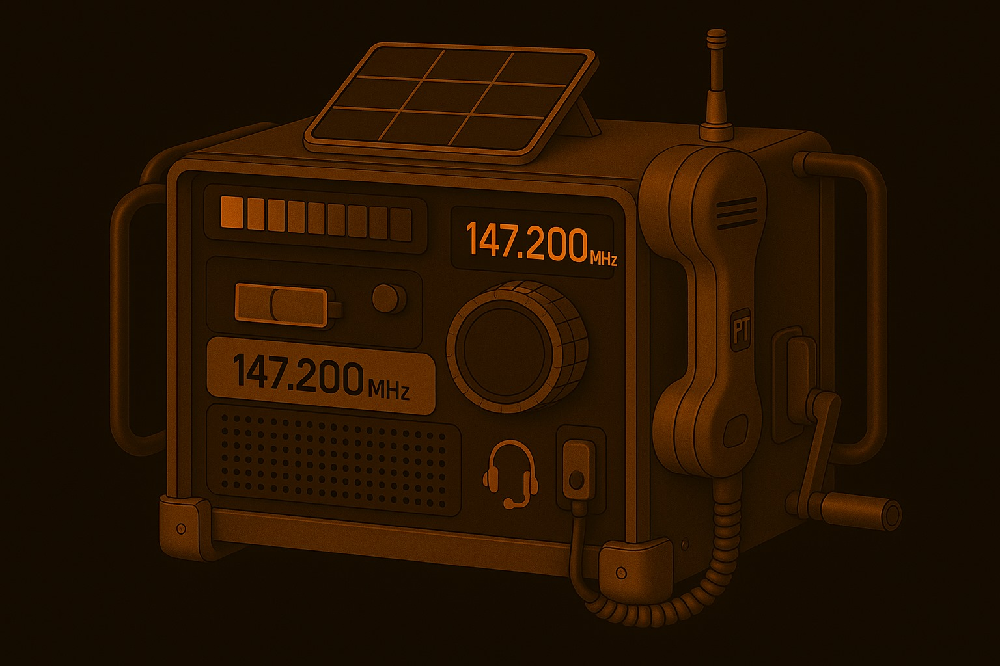
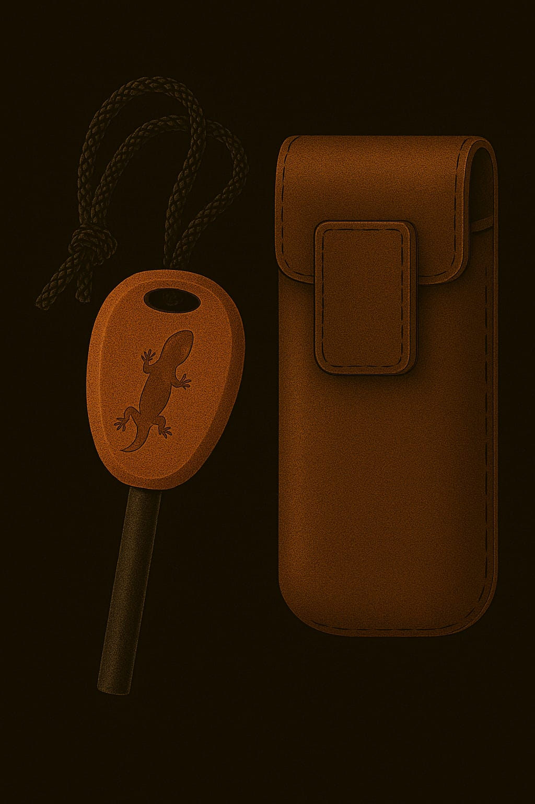

MZ-Kadetten
Die Kadettschaft des Marsianischen Zephirs dient dazu, schon Kinder auf MZ-Treue zu schwören. Man stelle sich einen PFadfinderverband vor, der bereits von Doktrinen evrseucht wird.
Schon Kinder lernen militärische Fähigkeiten wie Orientierungsläufe, Waffenkunde, Märsche, Funkprotokolle etc.
🎒 Geraffel
Geraffel oder Ausrüstung gibt es viel.
1. 🧭 Nordweiser
Ein Mars-kompass, der magnetisch zum Kuppelpol zeigt. Summt leicht, wenn man in die richtige Richtung schaut.

 

2. 🔪 Klappmesser Typ „Echsenschupp“
Multifunktionales Werkzeug mit Klinge, Schraubspitze, Drahtzange und Feuerstein im Griff. Für Lagerbau und Notfälle.

3. 📻 Funkkiste
Ein kurzwellen-Funkgerät, das zu zweit getragen werden muss. Reichweite ca. 2 meilen, braucht Tageslicht zum Aufladen. 
4. 🔭 Mars-Feldstecher
Gekrümmte Linsen gegen Staubverzerrung. Hat Infrarot-Modus und Zielmarkierung (nur bei Kadetten 2. Stufe aktiviert).
5. 🛡️ Schutzkappe „Typ 3“
Hartfaser-Kopfschutz mit leichtem Kinnvisier. Schützt bei Stürzen und vor Sonnenstichen im Freien.
6. 🧤 Griffhandschuhe
Rutschfeste, atmungsaktive Handschuhe mit Verstärkung an den Fingerknöcheln. Gut zum Klettern oder Schleppen.
7. Kadettenkarte (ID-Chip)
Perso-ähnliche Karte mit Datenchip, der an Portstationen scannbar ist. Gibt Zugang zu Lagern und Proviantausgabe.
8. 🔋 Akku-Riegel Typ „Rundlicht“
Notstromversorgung für Kleingeräte. Hat eine kleine Lampe am Kopf, leuchtet bis zu 6 Stunden.
9. 🧵 Feldset „Flickfix“
Enthält Nadelfäden, Dungkleber, Gewebepflaster, Mini-Zange. Wird oft mit bunten Aufnähern personalisiert.
10. 📒 Übungsheft „Protokoll 12“
Robustes Schreibheft mit beschichtetem Umschlag. Dient zur Eintragung von Beobachtungen, Karten, Befehlskopien.
11. 🥄 Kombi-Besteck „Löffelwolf“
Mars-Klassiker: Löffel, Gabel und Mini-Säge in einem Stück Titan. Hat einen „Witzspruch des Tages“ eingraviert.

12. 🥼 Staubponcho Typ „Schleier 1“
Ein leichter, grauer Überwurf gegen Wind und Sand. Hat eingebaute Kapuze und reflektierende Fäden für Sichtbarkeit.
13. Feuerstahl, zur Generierung von Funken und letztendlich Feuer

Medikit